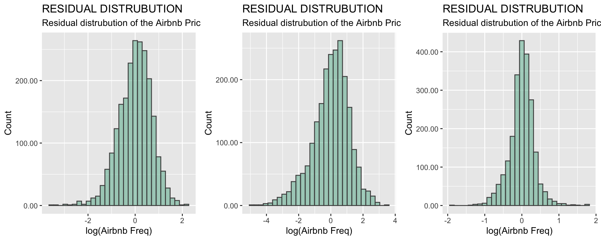
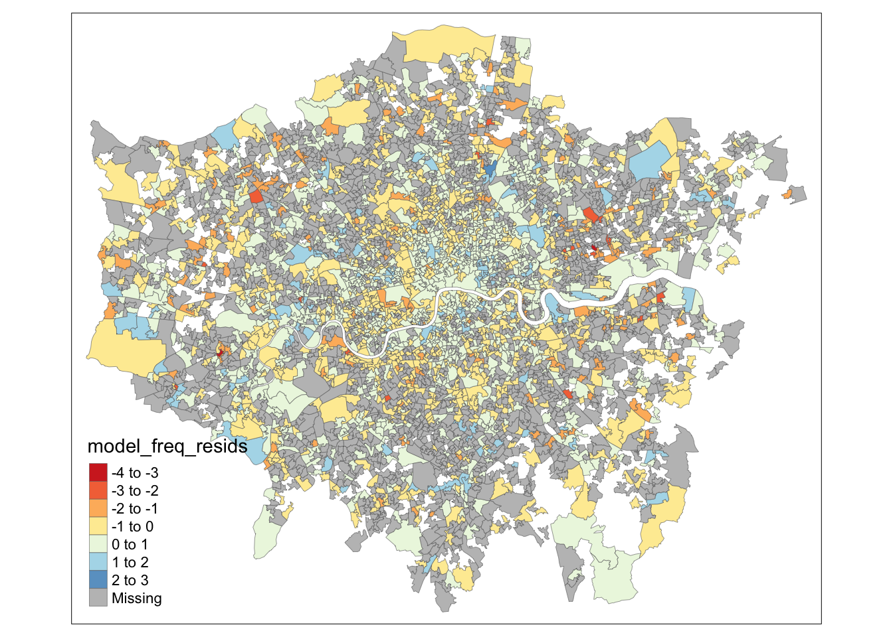
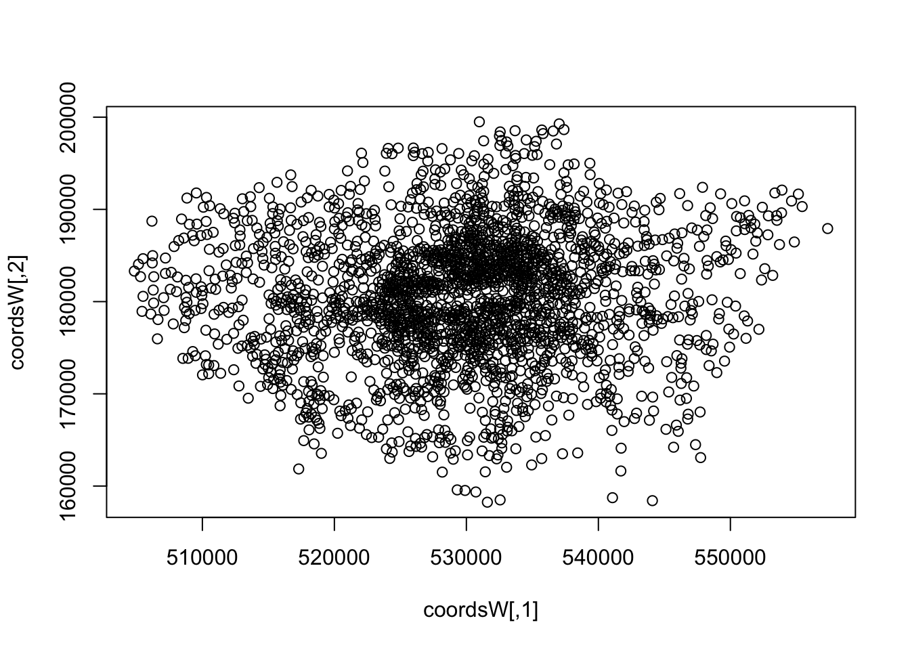
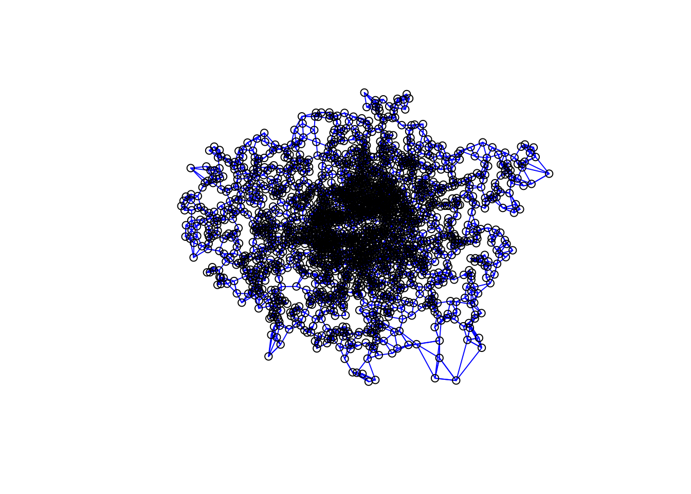
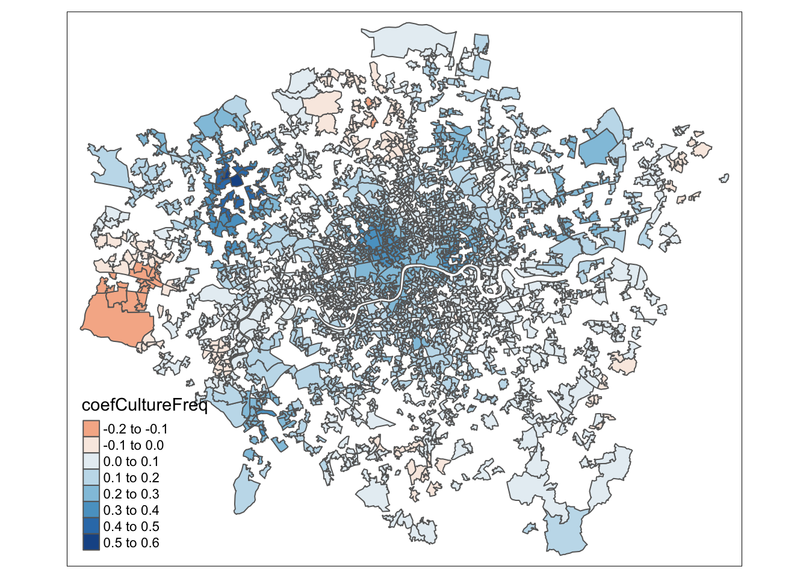
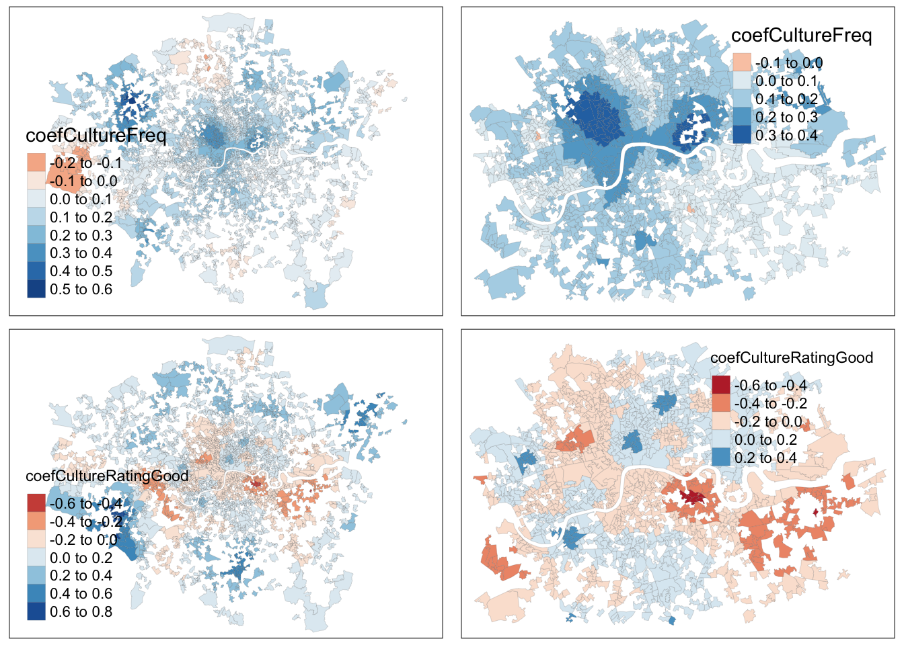

Chapter 6 Regression
Now we are going to runa regression on
#----load all the libraries needed
# load in libraries
library(tidyverse)
library(scales)
library(lubridate)
library(ggridges)
library(gridExtra)
#regression
library(corrplot)
library(rgdal)
library(spdep)
library(car)
#----data visualization packages - https://serialmentor.com/dataviz/geospatial-data.html
#install.packages("remotes")
#install.packages("devtools")
library(remotes)
#install.packages("cowplot")
#devtools::install_github("wilkelab/cowplot")
library(cowplot)
#install.packages("colorspace")
library(colorspace)
#devtools::install_github("clauswilke/colorblindr")
#https://rdrr.io/github/clauswilke/dviz.supp/
#devtools::install_github("clauswilke/dviz.supp")
library(dviz.supp)
#https://cran.r-project.org/web/packages/jtools/vignettes/summ.html
#install.packages('jtools')
library(jtools)
options(scipen = 999)#londonLSOAProfiles_inner <- londonLSOAProfiles[londonLSOAProfiles$'InnerOuter' == "Inner London"]
#londonLSOAProfiles_inner <- subset(londonLSOAProfiles, InnerOuter == "Inner London")
#first, let's make sure R is reading our InnerOuter variable as a factor
londonLSOAProfiles$InnerOuter <- as.factor(londonLSOAProfiles$InnerOuter)
#---SUPPLY SIDE MODEL
model_freq <- lm(log(`airbnb_freq`) ~
`bame_p` +
log(`young_p`) +
`nonUK` +
`education` +
`income` +
`house_mortg` +
`house_price` +
log(culture_freq) +
#log(culture_rating) +
culture_rating_good +
culture_reviews_popular +
`InnerOuter`,
data = londonLSOAProfiles, na.action=na.exclude)
#---DEMAND SIDE MODEL
model_reviews <- lm(log(`airbnb_no_reviews`) ~
`bame_p` +
log(`young_p`) +
`nonUK` +
`education` +
`employees` +
log(`income`) +
`house_mortg` +
`house_price` +
log(`culture_freq`) +
culture_rating_good +
culture_reviews_popular +
`InnerOuter`,
data = londonLSOAProfiles, na.action=na.exclude)
#---AIRBNB PRICE MODEL
model_price <- lm(log(`airbnb_price`) ~
`bame_p` +
`nonUK` +
`education` +
`employees` +
`income` +
`house_mortg` +
`house_price` +
log(culture_freq) +
culture_rating_good +
culture_reviews_popular +
`InnerOuter`,
data = londonLSOAProfiles, na.action=na.exclude)
#summary(model_reviews)
#summary(model_freq)
#summary(model_price)Dudas et al said remove all variables where vif is above 5
print(vif(model_freq))## bame_p log(young_p) nonUK
## 4.54 2.69 4.06
## education income house_mortg
## 4.98 6.79 2.97
## house_price log(culture_freq) culture_rating_good
## 2.76 2.56 1.04
## culture_reviews_popular InnerOuter
## 1.10 2.02print(vif(model_reviews))## bame_p log(young_p) nonUK
## 4.89 2.73 4.07
## education employees log(income)
## 8.06 3.78 8.65
## house_mortg house_price log(culture_freq)
## 3.85 2.56 2.56
## culture_rating_good culture_reviews_popular InnerOuter
## 1.05 1.10 2.04print(vif(model_price))## bame_p nonUK education
## 4.81 4.00 6.72
## employees income house_mortg
## 3.79 6.55 3.50
## house_price log(culture_freq) culture_rating_good
## 2.80 1.81 1.04
## culture_reviews_popular InnerOuter
## 1.07 1.93Run the regression again without the high vif variable and insignificant variables
#---SUPPLY SIDE MODEL
model_freq <- lm(log(`airbnb_freq`) ~
`bame_p` +
log(`young_p`) +
`nonUK` +
`education` +
`house_mortg` +
`house_price` +
log(culture_freq) +
culture_rating_good +
`InnerOuter`,
data = londonLSOAProfiles, na.action=na.exclude)
#---DEMAND SIDE MODEL
model_reviews <- lm(log(`airbnb_no_reviews`) ~
`bame_p` +
log(`young_p`) +
`nonUK` +
`employees` +
`house_mortg` +
`house_price` +
log(`culture_freq`) +
culture_rating_good +
`InnerOuter`,
data = londonLSOAProfiles, na.action=na.exclude)
#---AIRBNB PRICE MODEL
model_price <- lm(log(`airbnb_price`) ~
`bame_p` +
`nonUK` +
`employees` +
`house_mortg` +
`house_price` +
log(culture_freq) +
culture_rating_good +
`InnerOuter`,
data = londonLSOAProfiles, na.action=na.exclude)
#summary(model_reviews)
#summary(model_freq)
#summary(model_price)print(vif(model_freq))## bame_p log(young_p) nonUK education
## 4.49 2.48 4.03 2.62
## house_mortg house_price log(culture_freq) culture_rating_good
## 2.62 1.79 2.52 1.04
## InnerOuter
## 2.00print(vif(model_reviews))## bame_p log(young_p) nonUK employees
## 4.31 2.46 3.55 2.33
## house_mortg house_price log(culture_freq) culture_rating_good
## 3.08 1.77 2.51 1.04
## InnerOuter
## 1.86print(vif(model_price))## bame_p nonUK employees house_mortg
## 4.30 3.45 2.32 3.08
## house_price log(culture_freq) culture_rating_good InnerOuter
## 1.72 1.73 1.04 1.75summ(model_freq) | Observations | 2213 (2118 missing obs. deleted) |
| Dependent variable | log(airbnb_freq) |
| Type | OLS linear regression |
| F(9,2203) | 1344.96 |
| R² | 0.85 |
| Adj. R² | 0.85 |
| Est. | S.E. | t val. | p | |
|---|---|---|---|---|
| (Intercept) | -3.70 | 0.22 | -16.89 | 0.00 |
| bame_p | -0.01 | 0.00 | -5.07 | 0.00 |
| log(young_p) | 0.87 | 0.03 | 32.56 | 0.00 |
| nonUK | 0.01 | 0.00 | 5.31 | 0.00 |
| education | 0.02 | 0.00 | 13.25 | 0.00 |
| house_mortg | -0.03 | 0.00 | -13.61 | 0.00 |
| house_price | 0.00 | 0.00 | 0.85 | 0.40 |
| log(culture_freq) | 0.22 | 0.02 | 10.52 | 0.00 |
| culture_rating_good | 0.13 | 0.04 | 3.34 | 0.00 |
| InnerOuterOuter London | -0.83 | 0.04 | -19.54 | 0.00 |
| Standard errors: OLS |
summ(model_reviews)| Observations | 2213 (2118 missing obs. deleted) |
| Dependent variable | log(airbnb_no_reviews) |
| Type | OLS linear regression |
| F(9,2203) | 717.61 |
| R² | 0.75 |
| Adj. R² | 0.74 |
| Est. | S.E. | t val. | p | |
|---|---|---|---|---|
| (Intercept) | -3.20 | 0.41 | -7.83 | 0.00 |
| bame_p | -0.02 | 0.00 | -7.10 | 0.00 |
| log(young_p) | 0.93 | 0.04 | 21.45 | 0.00 |
| nonUK | 0.03 | 0.00 | 8.32 | 0.00 |
| employees | 0.03 | 0.00 | 6.90 | 0.00 |
| house_mortg | -0.04 | 0.00 | -10.33 | 0.00 |
| house_price | 0.00 | 0.00 | 2.75 | 0.01 |
| log(culture_freq) | 0.30 | 0.03 | 8.72 | 0.00 |
| culture_rating_good | 0.20 | 0.06 | 3.15 | 0.00 |
| InnerOuterOuter London | -1.23 | 0.07 | -18.24 | 0.00 |
| Standard errors: OLS |
summ(model_price)| Observations | 2213 (2118 missing obs. deleted) |
| Dependent variable | log(airbnb_price) |
| Type | OLS linear regression |
| F(8,2204) | 233.02 |
| R² | 0.46 |
| Adj. R² | 0.46 |
| Est. | S.E. | t val. | p | |
|---|---|---|---|---|
| (Intercept) | 3.86 | 0.08 | 46.64 | 0.00 |
| bame_p | -0.01 | 0.00 | -10.34 | 0.00 |
| nonUK | 0.01 | 0.00 | 7.38 | 0.00 |
| employees | 0.00 | 0.00 | 4.30 | 0.00 |
| house_mortg | -0.01 | 0.00 | -6.29 | 0.00 |
| house_price | 0.00 | 0.00 | 9.93 | 0.00 |
| log(culture_freq) | 0.05 | 0.01 | 6.49 | 0.00 |
| culture_rating_good | 0.07 | 0.02 | 3.72 | 0.00 |
| InnerOuterOuter London | -0.18 | 0.02 | -9.61 | 0.00 |
| Standard errors: OLS |
# #effect_plot(model_freq, data = londonLSOAProfiles, pred = culture_rating, interval = TRUE, plot.points = TRUE)
#
# #plot_summs(model_freq, model_reviews, scale = TRUE)
#
# #install.packages('huxtable')
# library(huxtable)
#
# export_summs(model_freq)#and for future use, write the residuals out to a column in your dataframe
londonLSOAProfiles$model_freq_resids <- residuals(model_freq)
londonLSOAProfiles$model_reviews_resids <- residuals(model_reviews)
londonLSOAProfiles$model_price_resids <- residuals(model_price)# #https://stackoverflow.com/questions/6882709/how-do-i-deal-with-nas-in-residuals-in-a-regression-in-r
# #how to deal with residuals with NA - make use of the row names associated with the data frame provided as input to lm
model_freq_resids_graph <- londonLSOAProfiles %>%
drop_na(model_freq_resids) %>%
ggplot(aes(x= model_freq_resids)) +
geom_histogram(alpha = 0.5, fill = "#5EB296", colour = "#4D4D4D") +
scale_y_continuous(labels = comma) +
ggtitle("RESIDUAL DISTRUBUTION", subtitle = "Residual distrubution of the Airbnb Price model") +
labs(x= "log(Airbnb Freq)", y= "Count")
model_reviews_resids_graph <- londonLSOAProfiles %>%
drop_na(model_reviews_resids) %>%
ggplot(aes(x= model_reviews_resids)) +
geom_histogram(alpha = 0.5, fill = "#5EB296", colour = "#4D4D4D") +
scale_y_continuous(labels = comma) +
ggtitle("RESIDUAL DISTRUBUTION", subtitle = "Residual distrubution of the Airbnb Price model") +
labs(x= "log(Airbnb Freq)", y= "Count")
model_price_resids_graph <- londonLSOAProfiles %>%
drop_na(model_price_resids) %>%
ggplot(aes(x= model_price_resids)) +
geom_histogram(alpha = 0.5, fill = "#5EB296", colour = "#4D4D4D") +
scale_y_continuous(labels = comma) +
ggtitle("RESIDUAL DISTRUBUTION", subtitle = "Residual distrubution of the Airbnb Price model") +
labs(x= "log(Airbnb Freq)", y= "Count")
g <- grid.arrange(model_freq_resids_graph, model_reviews_resids_graph, model_price_resids_graph, ncol=3)
#plot(model_freq)#nona <- londonLSOAProfiles[londonLSOAProfiles$model_freq_resids != 0]
#run durbin-watson test
print(durbinWatsonTest(model_freq$residuals))## [1] 1.5print(durbinWatsonTest(model_reviews$residuals))## [1] 1.58print(durbinWatsonTest(model_price$residuals))## [1] 1.73#plot the residuals to see for spatial autocorrelation
tm_shape(londonLSOAProfiles) +
tm_borders(col = 'dimgray', lwd = 0.3, lty = "solid") +
tm_polygons("model_freq_resids", palette = "RdYlBu")## Warning: The shape londonLSOAProfiles is invalid. See sf::st_is_valid## Warning: One tm layer group has duplicated layer types, which are omitted. To
## draw multiple layers of the same type, use multiple layer groups (i.e. specify
## tm_shape prior to each of them).
#use Moran's I to test for spatial auto correlation
model_freq_resids_noNA <- londonLSOAProfiles %>% drop_na(model_freq_resids)
#Firstly convert our SF object into an SP object:
model_freq_resids_SP <- as(model_freq_resids_noNA, "Spatial")#and calculate the centroids of all LSOAS in London
coordsW <- coordinates(model_freq_resids_SP)
plot(coordsW)
#Now we need to generate a spatial weights matrix (remember from the lecture a couple of weeks ago). We'll start with a simple binary matrix of queen's case neighbours
#or nearest neighbours
knn_wards <- knearneigh(coordsW, k=4)
LWard_knn <- knn2nb(knn_wards)
plot(LWard_knn, coordinates(coordsW), col="blue")
#create a spatial weights matrix object from these weights
Lward.knn_4_weight <- nb2listw(LWard_knn, style="C", zero.policy=TRUE)
#now run a moran's I test on the residuals
moran.test(model_freq_resids_SP@data$model_freq_resids, Lward.knn_4_weight, zero.policy=T)##
## Moran I test under randomisation
##
## data: model_freq_resids_SP@data$model_freq_resids
## weights: Lward.knn_4_weight
##
## Moran I statistic standard deviate = 22, p-value <2e-16
## alternative hypothesis: greater
## sample estimates:
## Moran I statistic Expectation Variance
## 0.315132 -0.000452 0.000202#Dealing with Spatially Autocorrelated Residuals - Spatial Lag and Spatial Error models
library(spatialreg)
# #run a spatially-lagged regression model
# slag_dv_model_price_knn4 <- lagsarlm(log(`airbnb_price`) ~
# `young_p` +
# `bame_p` +
# `nonUK` +
# `education` +
# `employees` +
# `income` +
# #`housing` +
# `house_mortg` +
# `house_price` +
# #`transport` +
# `culture_freq` +
# `culture_rating`+
# `InnerOuter`,
# data = r, cache = TRUE, message=FALSE, error=TRUE,
# na.action=na.exclude,
# nb2listw(LWard_knn, style="C"),
# method = "eigen")
#---SUPPLY SIDE MODEL
slag_dv_model_freq_knn4 <- lagsarlm(log(`airbnb_freq`) ~
`bame_p` +
log(`young_p`) +
`nonUK` +
`education` +
`house_mortg` +
`house_price` +
log(culture_freq) +
culture_rating_good +
`InnerOuter`,
data = model_freq_resids_SP,
na.action=na.exclude,
nb2listw(LWard_knn, style="C"),
method = "eigen")
#
# #---DEMAND SIDE MODEL
# slag_dv_model_reviews_knn4 <- lagsarlm(log(`airbnb_no_reviews`) ~
# `bame_p` +
# log(`young_p`) +
# `nonUK` +
# `employees` +
# `house_mortg` +
# `house_price` +
# log(`culture_freq`) +
# culture_rating_good +
# `InnerOuter`,
# data = londonLSOAProfiles, na.action=na.exclude, nb2listw(LWard_knn, style="C"), method = "eigen")
#
# #---AIRBNB PRICE MODEL
# slag_dv_model_price_knn4 <- lagsarlm(log(`airbnb_price`) ~
# `bame_p` +
# `nonUK` +
# `employees` +
# `house_mortg` +
# `house_price` +
# log(culture_freq) +
# culture_rating_good +
# `InnerOuter`,
# data = londonLSOAProfiles, na.action=na.exclude, nb2listw(LWard_knn, style="C"), method = "eigen")
#what do the outputs show?
#options(digits = 2)
summary(slag_dv_model_freq_knn4)##
## Call:lagsarlm(formula = log(airbnb_freq) ~ bame_p + log(young_p) +
## nonUK + education + house_mortg + house_price + log(culture_freq) +
## culture_rating_good + InnerOuter, data = model_freq_resids_SP,
## listw = nb2listw(LWard_knn, style = "C"), na.action = na.exclude,
## method = "eigen")
##
## Residuals:
## Min 1Q Median 3Q Max
## -2.56718 -0.32726 0.03281 0.34933 2.10021
##
## Type: lag
## Coefficients: (asymptotic standard errors)
## Estimate Std. Error z value Pr(>|z|)
## (Intercept) -3.8647e+00 1.7617e-01 -21.9377 < 2.2e-16
## bame_p -6.5774e-03 1.3908e-03 -4.7290 2.256e-06
## log(young_p) 6.5594e-01 2.2635e-02 28.9790 < 2.2e-16
## nonUK 7.1146e-03 1.8829e-03 3.7786 0.0001577
## education 9.4630e-03 1.3735e-03 6.8897 5.591e-12
## house_mortg -1.0351e-02 1.8525e-03 -5.5876 2.302e-08
## house_price -6.6579e-08 4.1486e-08 -1.6048 0.1085302
## log(culture_freq) 1.4033e-01 1.6886e-02 8.3102 < 2.2e-16
## culture_rating_good 6.6976e-02 3.1723e-02 2.1113 0.0347505
## InnerOuterOuter London -2.7503e-01 3.8473e-02 -7.1486 8.769e-13
##
## Rho: 0.506, LR test value: 823, p-value: < 2.22e-16
## Asymptotic standard error: 0.0154
## z-value: 33, p-value: < 2.22e-16
## Wald statistic: 1087, p-value: < 2.22e-16
##
## Log likelihood: -1940 for lag model
## ML residual variance (sigma squared): 0.318, (sigma: 0.564)
## Number of observations: 2213
## Number of parameters estimated: 12
## AIC: 3905, (AIC for lm: 4726)
## LM test for residual autocorrelation
## test value: 5.71, p-value: 0.016878#write out the residuals
model_freq_resids_SP@data$slag_dv_model_freq_knn4_resids <- slag_dv_model_freq_knn4$residuals
#now test for spatial autocorrelation
moran.test(model_freq_resids_SP@data$slag_dv_model_freq_knn4_resids, Lward.knn_4_weight)##
## Moran I test under randomisation
##
## data: model_freq_resids_SP@data$slag_dv_model_freq_knn4_resids
## weights: Lward.knn_4_weight
##
## Moran I statistic standard deviate = -2, p-value = 1
## alternative hypothesis: greater
## sample estimates:
## Moran I statistic Expectation Variance
## -0.025299 -0.000452 0.000202# sem_model1 <- errorsarlm(log(`airbnb_price`) ~
# `young_p` +
# `bame_p` +
# `nonUK` +
# `education` +
# `employees` +
# `income` +
# #`housing` +
# `house_mortg` +
# `house_price` +
# #`transport` +
# `culture_freq` +
# `culture_rating`+
# `InnerOuter`,
# data = r, cache = TRUE, message=FALSE, error=TRUE,
# na.action=na.exclude,
# nb2listw(LWard_knn, style="C"),
# method = "eigen")
#---SUPPLY SIDE MODEL
sem_model_freq <- errorsarlm(log(`airbnb_freq`) ~
`bame_p` +
log(`young_p`) +
`nonUK` +
`education` +
`house_mortg` +
`house_price` +
log(culture_freq) +
culture_rating_good +
`InnerOuter`,
data = model_freq_resids_SP,
na.action=na.exclude,
nb2listw(LWard_knn, style="C"),
method = "eigen")
summary(sem_model_freq)##
## Call:errorsarlm(formula = log(airbnb_freq) ~ bame_p + log(young_p) +
## nonUK + education + house_mortg + house_price + log(culture_freq) +
## culture_rating_good + InnerOuter, data = model_freq_resids_SP,
## listw = nb2listw(LWard_knn, style = "C"), na.action = na.exclude,
## method = "eigen")
##
## Residuals:
## Min 1Q Median 3Q Max
## -2.676039 -0.318667 0.051536 0.381209 2.243631
##
## Type: error
## Coefficients: (asymptotic standard errors)
## Estimate Std. Error z value Pr(>|z|)
## (Intercept) -2.7745e+00 2.2412e-01 -12.3796 < 2.2e-16
## bame_p -8.1577e-03 2.1570e-03 -3.7821 0.0001555
## log(young_p) 7.6456e-01 2.4821e-02 30.8032 < 2.2e-16
## nonUK 1.5620e-02 2.7804e-03 5.6180 1.932e-08
## education 1.5775e-02 1.9643e-03 8.0308 8.882e-16
## house_mortg -1.4264e-02 2.2348e-03 -6.3828 1.739e-10
## house_price -1.6738e-08 5.3372e-08 -0.3136 0.7538149
## log(culture_freq) 1.3114e-01 1.8897e-02 6.9400 3.922e-12
## culture_rating_good 3.2871e-02 3.1798e-02 1.0337 0.3012610
## InnerOuterOuter London -9.5427e-01 6.5359e-02 -14.6006 < 2.2e-16
##
## Lambda: 0.625, LR test value: 510, p-value: < 2.22e-16
## Asymptotic standard error: 0.0185
## z-value: 33.7, p-value: < 2.22e-16
## Wald statistic: 1137, p-value: < 2.22e-16
##
## Log likelihood: -2097 for error model
## ML residual variance (sigma squared): 0.352, (sigma: 0.593)
## Number of observations: 2213
## Number of parameters estimated: 12
## AIC: 4218, (AIC for lm: 4726)library(spgwr)
#calculate kernel bandwidth
GWRbandwidth <- gwr.sel(log(`airbnb_freq`) ~
`bame_p` +
log(`young_p`) +
`nonUK` +
`education` +
`house_mortg` +
`house_price` +
log(culture_freq) +
culture_rating_good +
`InnerOuter`,
data = model_freq_resids_SP,
coords=coordsW,
adapt=T)## Warning in gwr.sel(log(airbnb_freq) ~ bame_p + log(young_p) + nonUK + education
## + : data is Spatial* object, ignoring coords argument## Adaptive q: 0.382 CV score: 1048
## Adaptive q: 0.618 CV score: 1069
## Adaptive q: 0.236 CV score: 1024
## Adaptive q: 0.146 CV score: 992
## Adaptive q: 0.0902 CV score: 948
## Adaptive q: 0.0557 CV score: 894
## Adaptive q: 0.0344 CV score: 837
## Adaptive q: 0.0213 CV score: 795
## Adaptive q: 0.0132 CV score: 776
## Adaptive q: 0.00813 CV score: 775
## Adaptive q: 0.00998 CV score: 773
## Adaptive q: 0.0103 CV score: 773
## Adaptive q: 0.0096 CV score: 773
## Adaptive q: 0.00975 CV score: 773
## Adaptive q: 0.0098 CV score: 773
## Adaptive q: 0.00971 CV score: 773
## Adaptive q: 0.00975 CV score: 773#run the gwr model
gwr.model = gwr(log(`airbnb_freq`) ~
`bame_p` +
log(`young_p`) +
`nonUK` +
`education` +
`house_mortg` +
`house_price` +
log(culture_freq) +
culture_rating_good +
`InnerOuter`,
data = model_freq_resids_SP,
coords=coordsW,
adapt=GWRbandwidth,
hatmatrix=TRUE,
se.fit=TRUE)## Warning in gwr(log(airbnb_freq) ~ bame_p + log(young_p) + nonUK + education + :
## data is Spatial* object, ignoring coords argument#print the results of the model
gwr.model## Call:
## gwr(formula = log(airbnb_freq) ~ bame_p + log(young_p) + nonUK +
## education + house_mortg + house_price + log(culture_freq) +
## culture_rating_good + InnerOuter, data = model_freq_resids_SP,
## coords = coordsW, adapt = GWRbandwidth, hatmatrix = TRUE,
## se.fit = TRUE)
## Kernel function: gwr.Gauss
## Adaptive quantile: 0.00975 (about 21 of 2213 data points)
## Summary of GWR coefficient estimates at data points:
## Min. 1st Qu. Median 3rd Qu. Max. Global
## X.Intercept. -7.23e+00 -4.32e+00 -3.36e+00 -2.17e+00 1.36e+00 -3.70
## bame_p -5.66e-02 -2.04e-02 -9.49e-03 5.62e-04 2.86e-02 -0.01
## log.young_p. 4.42e-01 6.66e-01 7.64e-01 8.75e-01 1.11e+00 0.87
## nonUK -2.72e-02 1.29e-02 2.19e-02 3.22e-02 7.71e-02 0.01
## education -1.64e-02 4.47e-03 1.57e-02 2.71e-02 7.34e-02 0.02
## house_mortg -5.83e-02 -2.21e-02 -1.20e-02 -4.04e-03 3.95e-02 -0.03
## house_price -4.55e-06 -1.37e-07 1.43e-07 5.24e-07 5.62e-06 0.00
## log.culture_freq. -1.80e-01 6.66e-02 1.17e-01 1.82e-01 5.13e-01 0.22
## culture_rating_good -4.56e-01 -5.28e-02 4.13e-02 1.58e-01 7.38e-01 0.13
## InnerOuterOuter.London -1.94e+00 -7.92e-01 -5.25e-01 -3.46e-01 6.10e-01 -0.83
## Number of data points: 2213
## Effective number of parameters (residual: 2traceS - traceS'S): 517
## Effective degrees of freedom (residual: 2traceS - traceS'S): 1696
## Sigma (residual: 2traceS - traceS'S): 0.557
## Effective number of parameters (model: traceS): 368
## Effective degrees of freedom (model: traceS): 1845
## Sigma (model: traceS): 0.534
## Sigma (ML): 0.488
## AICc (GWR p. 61, eq 2.33; p. 96, eq. 4.21): 3991
## AIC (GWR p. 96, eq. 4.22): 3472
## Residual sum of squares: 527
## Quasi-global R2: 0.925results<-as.data.frame(gwr.model$SDF)
names(results)## [1] "sum.w" "X.Intercept."
## [3] "bame_p" "log.young_p."
## [5] "nonUK" "education"
## [7] "house_mortg" "house_price"
## [9] "log.culture_freq." "culture_rating_good"
## [11] "InnerOuterOuter.London" "X.Intercept._se"
## [13] "bame_p_se" "log.young_p._se"
## [15] "nonUK_se" "education_se"
## [17] "house_mortg_se" "house_price_se"
## [19] "log.culture_freq._se" "culture_rating_good_se"
## [21] "InnerOuterOuter.London_se" "gwr.e"
## [23] "pred" "pred.se"
## [25] "localR2" "X.Intercept._se_EDF"
## [27] "bame_p_se_EDF" "log.young_p._se_EDF"
## [29] "nonUK_se_EDF" "education_se_EDF"
## [31] "house_mortg_se_EDF" "house_price_se_EDF"
## [33] "log.culture_freq._se_EDF" "culture_rating_good_se_EDF"
## [35] "InnerOuterOuter.London_se_EDF" "pred.se.1"#attach coefficients to original dataframe
model_freq_resids_SP@data$coefCultureFreq <- results$log.culture_freq.
model_freq_resids_SP@data$coefCultureRatingGood <- results$culture_rating_good
#model_freq_resids_SP@data$coefCultureRating <- results$culture_rating_se
#
# model_freq_resids_SP@data$coefPrivateRent <- results$X.Tenure..2011..Private.rented.....
#
# model_freq_resids_SP@data$coefCrime <- results$X.Crime..numbers..Violence.Against.The.Person.2012.13.
#
# model_freq_resids_SPdata$coefLev4Qual <- results$X.Qualifications..2011..Highest.level.of.qualification..Level.4.qualifications.and.above..tm_shape(model_freq_resids_SP) +
tm_polygons(col = "coefCultureFreq", palette = "RdBu")## Warning: The shape model_freq_resids_SP is invalid. See sf::st_is_valid
tm_shape(model_freq_resids_SP) +
tm_polygons(col = "coefCultureRatingGood", palette = "RdBu")## Warning: The shape model_freq_resids_SP is invalid. See sf::st_is_valid
# #run a final OLS model
# model_house_price <- lm(log(`house_price`) ~
# `bame_p` +
# `nonUK` +
# `education` +
# `employees` +
# `income` +
# `house_mortg` +
# `house_price` +
# log(culture_freq) +
# `InnerOuter`,
# data = londonLSOAProfiles, na.action=na.exclude)
#
# summary(model_house_price)